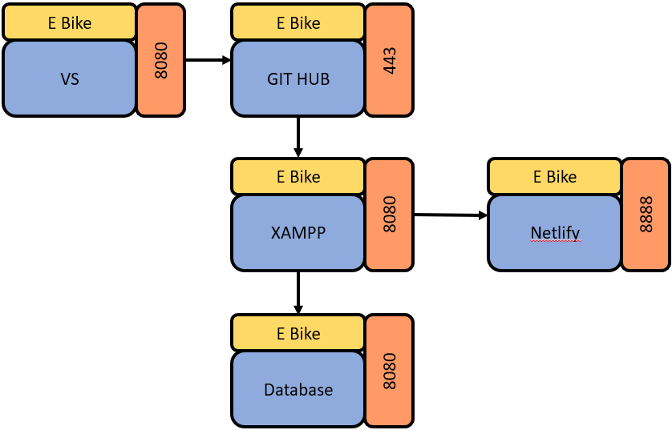
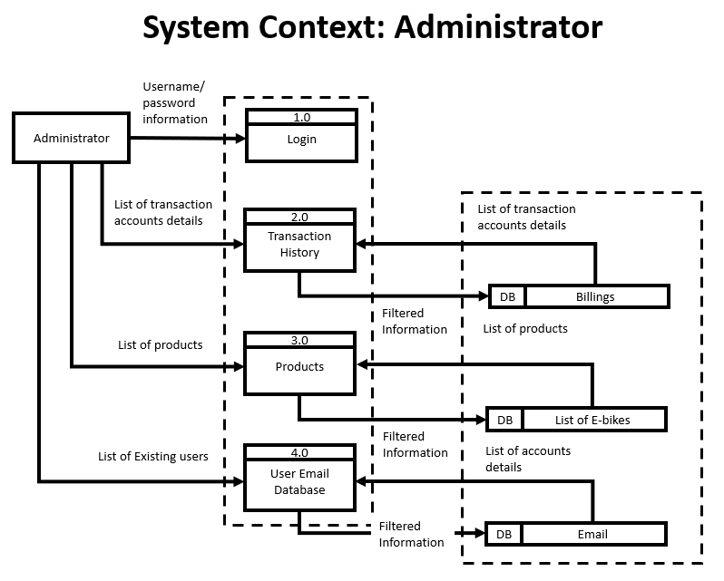

Introduction
The project aims to establish a dedicated online platform for e-bike retail, catering to the growing demand for sustainable transportation solutions. While acknowledging the value of social media for promotion, the project focuses on overcoming its limitations by creating a specialized website. This website will offer a fully customizable and immersive e-commerce experience, addressing challenges such as limited customization and control over user experience. By leveraging the flexibility of a dedicated website, the project seeks to provide seamless browsing, efficient product selection, and streamlined payment processing, fostering confidence and loyalty among users. Additionally, robust e-commerce functionalities will be implemented, including transaction history and digital receipts, to maximize user satisfaction and engagement. The ultimate goal is to establish a professional and reliable e-bike retail presence that inspires trust, drives conversions, and promotes sustainable mobility solutions.
Scope and Limitation
Vivien De Luna The project will facilitate seamless browsing of e-bikes, allowing users to explore various models and features effortlessly. Users will also have access to detailed descriptions of each e-bike, providing comprehensive information to aid in decision-making. Additionally, we will focus on developing a robust ticketing system to manage customer inquiries efficiently, along with implementing SMS capabilities to enhance communication with customers regarding their inquiries or orders. Furthermore, our project will address data transaction management to ensure smooth handling and processing of customer interactions and transactions.Related Literature
In today's digital landscape, the convergence of e-commerce and sustainable transportation is underscored by key themes elucidated in recent research. User experience stands as a cornerstone in e-commerce success, with intuitive navigation, streamlined checkout processes, and mobile optimization identified as critical factors by Tan (2021). Concurrently, the surge in interest in sustainable transportation solutions, particularly electric bikes, is bolstered by online platforms and digital marketing strategies, as noted by MacArthur et al. (2019) and Parkin et al. (2020). These strategies, encompassing effective SEO techniques and digital advertising campaigns, amplify visibility and attract organic traffic. Chen and Popovich (2003) assert the pivotal role of efficient customer support systems, emphasizing the need for streamlined ticketing solutions and knowledge bases. Moreover, the integration of SMS capabilities, as explored by Zhang et al. (2019) and Wang et al. (2021), serves to enhance communication and deliver timely updates to users. In the realm of cross-border e-commerce, Chaffey et al. (2019) and Li and Li (2020) advocate for internationalization strategies, including localization and adaptation to cultural preferences, to effectively target global markets and capitalize on the burgeoning demand for sustainable transportation solutions. Through a synthesis of these insights, a holistic approach emerges, underlining the interconnectedness of user experience, digital promotion, customer support, and internationalization in advancing both e-commerce and sustainable transportation agendas.
Methodologies
The Data Flow Diagram of the system.
This will show the System Context of the Admin.
